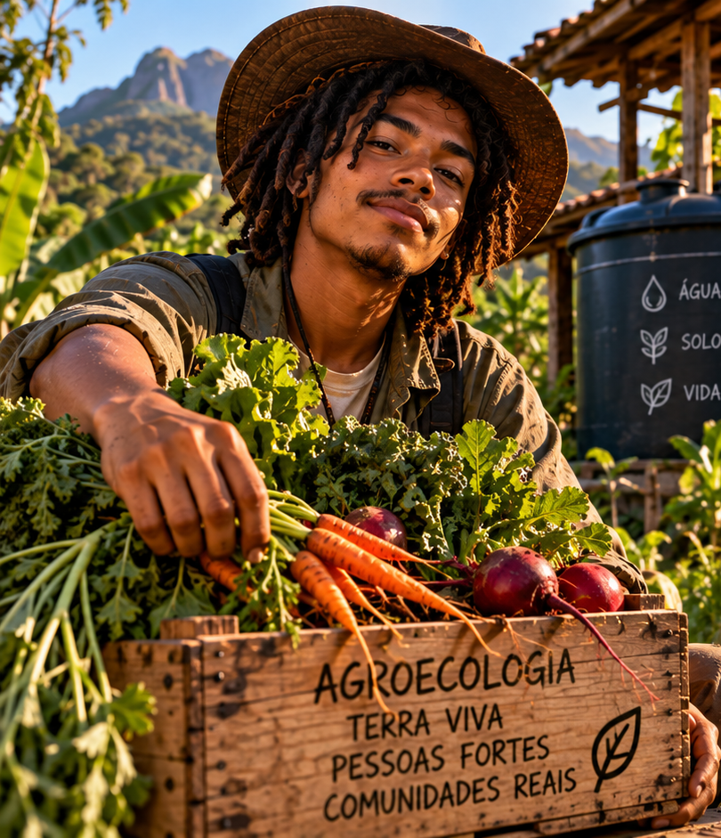
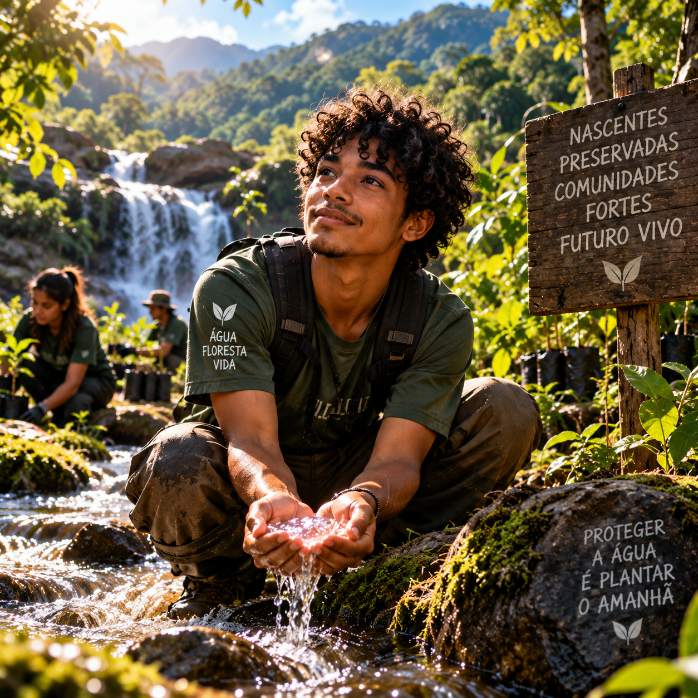
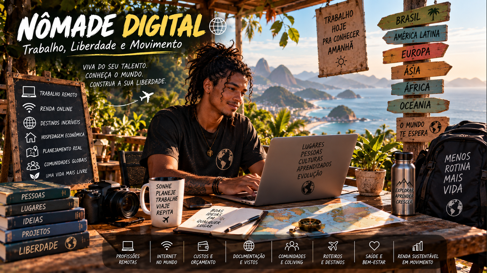
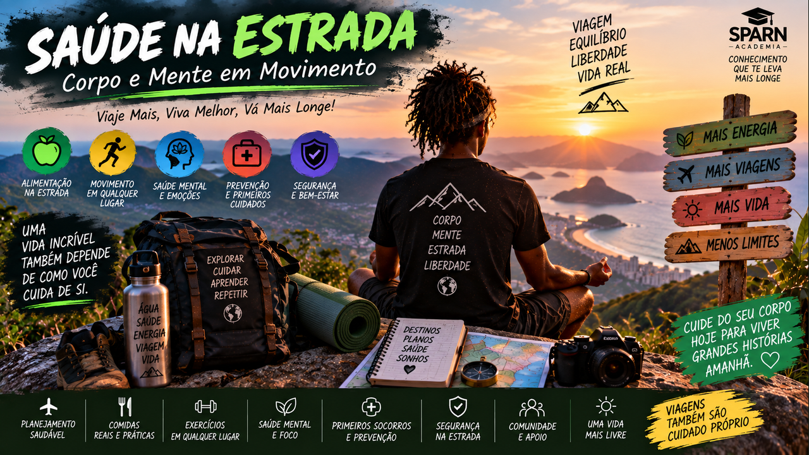

Mente Milionária de Verdade
Troque a fantasia do enriquecimento rápido por hábitos consistentes, decisões conscientes e construção paciente de liberdade.
Cursos originais da Sparn, ferramentas práticas e uma biblioteca global para aprender, trabalhar e criar novas possibilidades.
Cursos, oportunidades e caminhos para avançar.
33 formações da Sparn organizadas por área, com conteúdo aplicado, exercícios, projetos e ferramentas para avançar.

Da leitura estratégica do edital à escrita, orçamento, inscrição, execução e prestação de contas de um projeto cultural.
Transforme uma intuição criativa em conceito, objetivos, experiência, impacto, comunicação e dossiê profissional.
Criação, pesquisa, projetos, produção, comunicação e automação com direção humana, ética e proteção de direitos.

Posicione seu trabalho, crie conteúdo com identidade, forme comunidade e transforme atenção em presença, público e oportunidades reais.
Transforme talento e repertório em uma atividade sustentável com receitas diversificadas, preços justos, organização financeira e relações profissionais.
Planeje equipes, orçamento, infraestrutura, acessibilidade, segurança e operação para realizar eventos e ações culturais com qualidade.
Entenda as forças que estão transformando as profissões, descubra áreas em crescimento e crie um plano pessoal de carreira para os próximos 90 dias.

Aprenda a desenhar, coordenar e supervisionar equipes de agentes que pesquisam, analisam, produzem e verificam tarefas.

Use ferramentas generativas como instrumentos criativos, desenvolva linguagem própria e construa uma obra multimídia com autoria, método e responsabilidade.

Entenda como robôs percebem, decidem e agem, conheça as profissões da robótica e planeje sua entrada segura nesse mercado.

Fortaleça pensamento crítico, criatividade, empatia, comunicação, ética e adaptabilidade para gerar valor em um mundo com IA.
Transforme autoconhecimento e tendências em hipóteses de carreira, experimentos reais, portfólio, rede e um plano executável.

Entenda renda, gastos, escolhas, orçamento, metas e hábitos para começar a vida adulta com autonomia e responsabilidade.

Desenvolva disciplina, paciência, responsabilidade e visão de longo prazo para construir estabilidade, patrimônio e liberdade.

Quanto guardar, onde deixar, quando usar e como começar mesmo ganhando pouco.

Entenda sua vida bancária, use crédito com consciência e reconheça golpes antes de confirmar.
Aprenda a interpretar escolhas, mercados, preços, produção, indicadores, crescimento e evidências com raciocínio econômico.

Reconecte alimento, solo, água, território e economia local e transforme conhecimento em um primeiro ciclo de cultivo possível.

Aprenda a começar uma horta possível em vasos, canteiros ou pequenos espaços, cuidando de solo, água, plantio, manutenção e colheita.

Entenda custos, preço, mercado, comercialização, caixa e reinvestimento para transformar produção agrícola em renda sustentável.

Aprenda sucessão, estratos, solo vivo, biomassa, desenho e manejo para produzir alimentos enquanto recupera funções ecológicas.

Aprenda a diagnosticar áreas, escolher métodos e espécies, organizar mutirões e acompanhar a recuperação ecológica com participação jovem.

Aprenda a compreender nascentes, diagnosticar riscos, recuperar vegetação e organizar monitoramento comunitário da água.

Entenda biologia, matéria orgânica, água, estrutura e diagnóstico para construir fertilidade e regenerar a base da produção.

Aprenda reprodução, seleção, conservação, agrobiodiversidade e redes comunitárias para manter sementes e conhecimento vivos.

Planeje a busca por emprego, escolha cidades, encontre voluntariados confiáveis e construa renda remota em euro ou dólar.

Planeje a busca por emprego, escolha cidades, encontre voluntariados confiáveis e construa renda remota em euro ou dólar.
Planeje a busca por emprego, escolha cidades, encontre voluntariados confiáveis e construa renda remota em euro ou dólar.

Planeje a busca por emprego, escolha cidades, encontre voluntariados confiáveis e construa renda remota em euro ou dólar.

Planeje a busca por emprego, escolha cidades, encontre voluntariados confiáveis e construa renda remota em euro ou dólar.

Planeje a busca por emprego, escolha cidades, encontre voluntariados confiáveis e construa renda remota em euro ou dólar.

Planeje a busca por emprego, escolha cidades, encontre voluntariados confiáveis e construa renda remota em euro ou dólar.

Planeje a busca por emprego, escolha cidades, encontre voluntariados confiáveis e construa renda remota em euro ou dólar.
Troque a fantasia do enriquecimento rápido por hábitos consistentes, decisões conscientes e construção paciente de liberdade.
Desenvolva pensamento crítico, criatividade, comunicação e colaboração com inteligência artificial.
Crie três caminhos profissionais, identifique suas lacunas e desenvolva um projeto real de portfólio.
Estamos organizando cursos de universidades, governos e instituições do mundo inteiro por área, idioma, duração e tipo de certificado.